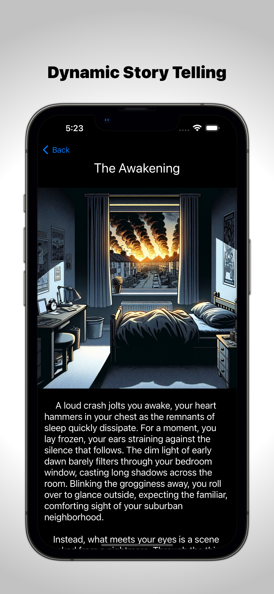
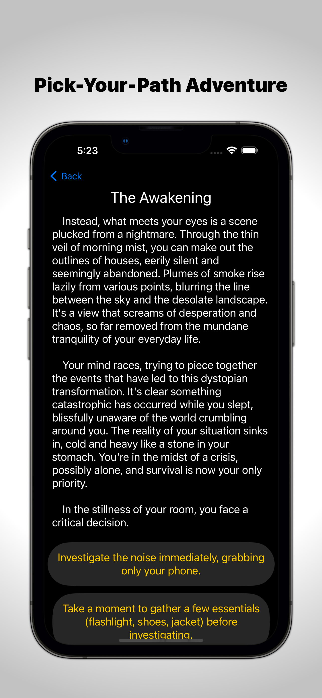
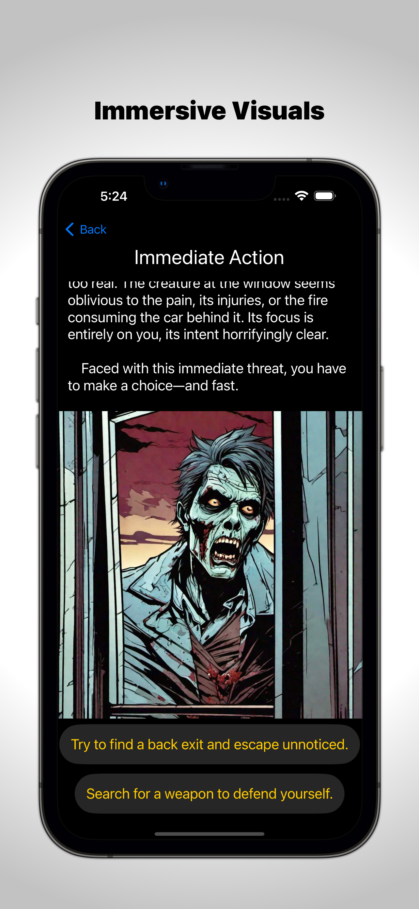

Choices move the story
Each decision maps to a new chapter, giving players different routes through the same survival scenario.
Original iOS project · SwiftUI
Survive is a text-based RPG for iPhone. Players wake to a collapsed world, make high-stakes choices, and move through illustrated chapters toward safety.
The current build includes 17 chapters, multiple routes, and one shared ending.

Project overview
Survive began with a practical goal: turn a choose-your-own-adventure idea into a working iPhone app.
Building the game made abstract lessons about navigation, state, and data flow concrete. Each chapter lives as structured data; every choice points to another chapter; and a focused view model keeps the interface in sync with the player's path.
This was my first Swift project—the point where studying iOS concepts became designing, debugging, and finishing a usable product.
The experience
Each decision maps to a new chapter, giving players different routes through the same survival scenario.
AI-generated comic-style scenes support the text and give key moments a consistent visual tone.
A persistent font-size setting lets players tune the narrative-heavy interface to their preference.
App gallery

Story text and scene art establish the stakes before the first choice.

Clear actions let the player decide which chapter comes next.

Full-width scenes reinforce the danger and pacing of the narrative.
What I learned
The most important outcome was not a single screen. It was learning how models, state, and views work together across an entire app.
Chapter identifiers and next-chapter links keep branching logic out of the presentation layer.
A dedicated view model tracks the current chapter and updates the experience when a player makes a choice.
Persistent font controls matter in an app where long-form text is the primary interface.
Clear scope builds more trust than presenting future ideas as finished features.
Where it led
The original story later became the flagship narrative inside Step By Step, a SwiftUI project that connects HealthKit activity with story energy, achievements, and replayable progress.
Contact
I’m always glad to discuss SwiftUI, interactive storytelling, or what I learned while building Survive.